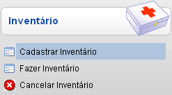
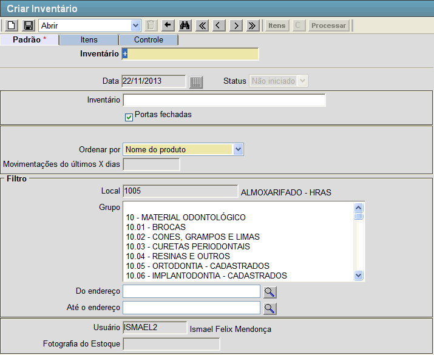
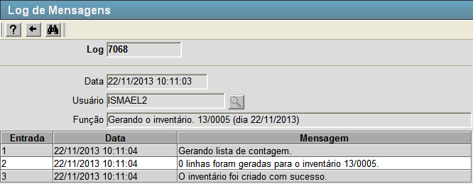
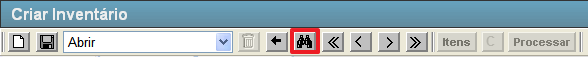
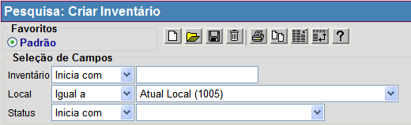

Cadastrar Inventário [
Voltar
]Utilize este formulário para configurar e criar um inventário.
Para acessá-lo, vá ao menu "Estoque - Inventário"
na tela inicial e clique em "Cadastrar Inventário".

Após clicar no formulário, o sistema abrirá
a seguinte tela:

Selecione uma das duas opções abaixo para
ver o guia passo-a-passo:
Criar novo inventário
Localizar e abrir registro de inventário existente
Criar novo inventário
1º Passo: configure os dados do inventário que deseja criar. Lembre-se que campos em amarelo são obrigatórios. - Inventário.
Este campo apresenta por padrão um sinal de "+". Desta forma, assim que
o inventário é salvo, é-lhe atribuído o próximo número de inventário
disponível. Não é necessário preencher este campo caso não queira um
número de inventário específico;
- Data. O Sistema exibe neste campo a data em que o inventário é criado;
- Status. Este campo exibe o status atual do inventário, que são: "Não iniciado", "Iniciado", "Contagem em aberto", "Contagem encerrada", "Processo de contagem concluído" e "Inventário concluído";
- Inventário. Você pode informar aqui um nome ou uma descrição do inventário em questão;
- Portas fechadas.
Marque esta opção caso deseje que os valores do inventário estejam
ocultos para os usuários. Por padrão esta opção já vem marcada nos
locais 1 e 5 e não é possível alterá-lo;
- Ordenar por. Selecione uma das formas de ordenamento para o inventário, as opções são: "Cód. Produto", "Grupo", "Local" e "Nome do produto";
- Local. O Sistema exibe neste campo o local onde o usuário se encontra;
- Grupo.
Selecione neste campo os grupos para os quais deseja criar o
inventário. Se nenhum grupo for selecionado, o inventário será criado
para todos os grupos;
- Do endereço / Ao endereço.
Se desejar criar o inventário para um intervalo de endereços, selecione
nestes campos o primeiro e o último endereço respectivamente;
- Usuário. O Sistema exibe aqui o nome do usuário que criou o inventário; e
- Fotografia do Estoque. Após o processar do inventário, o Sistema exibe aqui a data e hora da fotografia do estoque.
2°
Passo: se os dados do inventário estiverem preenchidos, clique no botão  [Salvar] para salvá-lo. [Salvar] para salvá-lo.
3° Passo: clique no botão  [Processar] para concluir o cadastro do inventário. Assim que o botão é pressionado, a seguinte tela será exibida: [Processar] para concluir o cadastro do inventário. Assim que o botão é pressionado, a seguinte tela será exibida: 
Localizar e abrir registro de inventário existente
Para visualizar os detalhes de um inventário
já cadastrado, siga os passos abaixo.
1º Passo: para localizar o inventário que deseja
abrir, clique no botão  [Procurar] da
barra de
botões. [Procurar] da
barra de
botões.

Em
seguida, utilize os filtros da pesquisa para localizar mais facilmente o inventário que deseja localizar. Para mais informações sobre
outros recursos
e
funcionalidades da pesquisa, favor ver o manual Introdução
ao Sistema.

Assim que localizar o inventário em questão, selecione-o com um clique. Quando o inventário é selecionado, o seu
cadastro é aberto e são exibidas as informações atuais.
Ir
para o topo da
página |